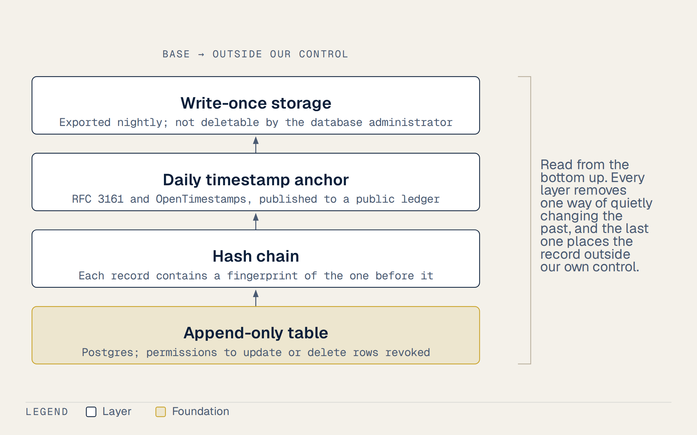
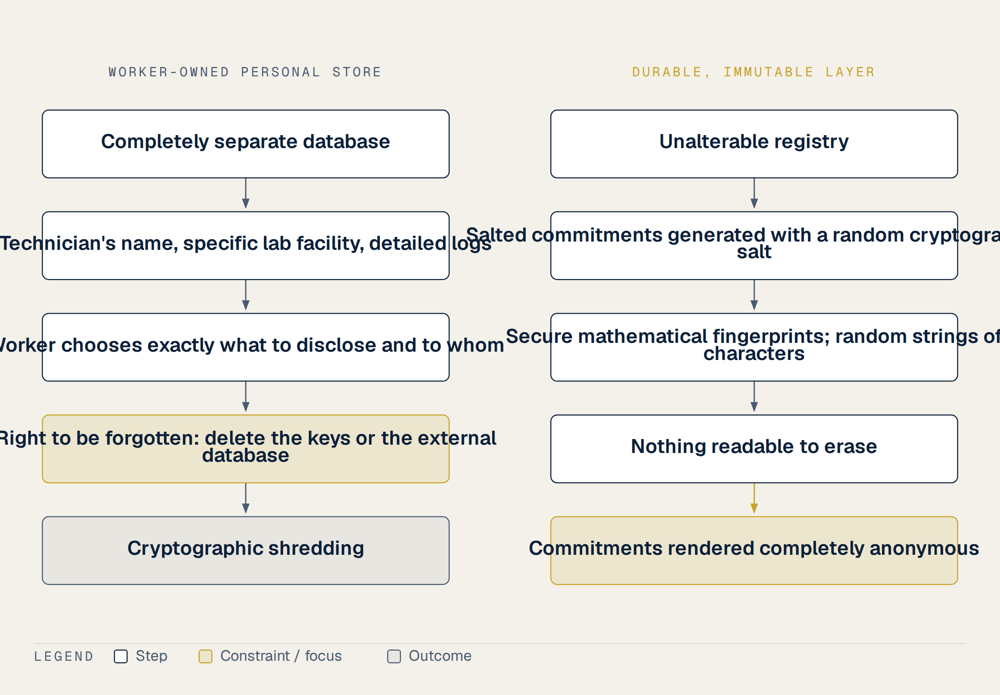

5 Plugging Into Rails That Already Exist
In a small, humid laboratory in a remote district of a developing country, a molecular diagnostic machine hums softly as it runs. Its network cable stretches across a concrete floor to a router, transmitting data in real time to a polished dashboard monitored in a European capital. The database registers its serial number, its calibration status, the lot number of the reagents, and the precise temperature profile of each polymerase chain reaction. Beside the machine stands a young technician who stayed past midnight to load the samples, but her name is entirely absent from the digital feed. The dashboard sees the instrument, but it does not see her. Three countries away, inside a darkened storage room of another provincial hospital, a second identical machine sits sealed in its original shipping crate. Delivered two years ago under a major international aid grant, it has never been unpacked, connected to a power outlet, or loaded with a single specimen. Because it is offline, it sends no telemetry and generates no records, remaining completely invisible on the donor’s digital dashboard. It is invisible in exactly the way that matters most, existing only as a quiet line on a physical inventory sheet while patients wait outside.
Our current tracking systems, including major platform networks that collect data across forty-three countries, view attribution purely as an instrument of surveillance and auditing. They know which serial number ran which test. Whether they know who ran it is a more careful question, and this chapter answers it inconsistently in places, so let me settle it here. Instrument software and middleware usually do record an operator account. What that account establishes is that someone signed in as that account, which is a weaker claim than it looks in a laboratory where logins are shared during a surge, and it is a claim that never leaves the institution’s own server. So the gap is not that the machine records nothing. It is that what it records is neither reliably tied to a person nor readable by anyone outside the building. In Vietnam, thirty-eight laboratories have implemented open-source laboratory information systems with support from the US CDC. These provincial systems mostly lack audit trails that bind a run to an identified person in a way an outside reader could check.
Our proposal is to add the missing layer to this running infrastructure by connecting a machine’s serial number to a technician’s name. Under our system, this data becomes a portable, verifiable professional asset owned by the worker rather than an auditing tool held by the institution. To do this cheaply and securely without expensive blockchain technology, we propose a Postgres append-only database. Each daily log of events is connected in a hash chain and anchored to a public ledger using a trusted RFC 3161 timestamp and OpenTimestamps, which are free to use and will outlive our organization. This ensures the records cannot be retroactively altered when an institution closes (1).
An unalterable record of something that never happened is still a lie, and now a permanent one. Cryptography alone cannot prevent data gaming or falsified inputs. No trial evidence exists on how a worker-owned, machine-anchored registry affects reporting accuracy or retention in low-resource settings. That absence covers everything proposed in this chapter, and I will not restate it at each step. We are proposing a logical, evidence-informed twelve-month pilot. Linking the machine’s serial number to a name turns anonymous telemetry into something a person can carry. I should be exact about what that does and does not establish, because it is the first thing a reviewer will press on. A serial number tied to a login proves that a particular account started a particular run at a particular minute. It does not prove that the specimen was collected properly, that the standard operating procedure was followed, or that the result was correct. Those are separate questions, answered by the external quality assessment layer and the supervisor countersignature, not by the telemetry. What the telemetry establishes is narrower and still worth having: that the work happened, when it happened, and who was logged in when it did.
I watched our daily work disappear as soon as the samples were processed. When writing a proposal to improve staff retention in preventive health, people often assume you must ask for new regulations or complex bureaucratic reforms. But we do not need to write a new law. We already have a powerful, legally binding rail running through our medical system, Circular 32/2023/TT-BYT, issued by the Ministry of Health.
Under Circular 32/2023/TT-BYT, every practice license holder in Vietnam is legally required to complete at least one hundred and twenty credit hours of continuing medical education every five years. Obtaining this CME certificate is a mandatory condition for license renewal. The administrative rail is already laid down. Every technician in our provincial laboratories is already forced to run on it (2).
However, there is a massive gap in how this legal rail functions today. The current system counts only passive hours attended. It simply measures how long a technician sat in a classroom chair. This metric is completely disconnected from actual field performance. A specialist can run thousands of critical diagnostic assays during a pandemic outbreak, but none of that invisible daily sweat counts toward their educational credits. As far as I have been able to establish, it also connects to no structured path to promotion, though I am reporting the absence of a link I could not find rather than a rule that forbids one. This disconnect is the precise seam where a verified professional record fits. By converting real-world labor into verified, credit-bearing assets, we can align legal compliance with actual competence.
This integration is especially vital for preventive medicine staff. Unlike clinical workers in hospitals, CDC technicians do not have private clinical revenue streams, making them the hardest to retain in the public sector. While the government has tried temporary salary bonuses, global evidence suggests that financial incentives alone represent the weakest intervention for long-term retention. Underutilized institutional capacity, like our existing CME rail, is much cheaper to activate than constructing new systems from scratch.
Still, we must remain completely honest about the limits of our proposal. There is currently no published evaluation of dedicated career pathways or retention outcomes for CDC and preventive health workers in Vietnam. Globally, the World Health Organization recommends linking continuing education to career advancement, but they openly acknowledge that the evidence backing these guidelines is of low or very low quality. Furthermore, using educational scholarships instead of cash rewards to incentivize this credit rail has not been documented in the literature. The absence of trial evidence noted earlier applies to this link too. Indeed, we must admit that providing training without corresponding increases in salary or responsibility can backfire, causing even greater frustration and demotivation. We are proposing a logical, low-cost connection of existing pieces, not a proven cure. By inserting a verified record into this existing legal seam, we can make the labor of our frontline technicians visible without asking for a single new regulatory decree. (3,4)
When international partners talk about improving global health security, they often propose building massive new systems. They want to construct new clinical facilities or buy expensive, high-throughput machinery. But this proposal is different. This is not a proposal to build something new from scratch. Instead, it is a proposal to connect things that are already standing. We do not need new infrastructure, because a significant foundation of technology and quality standards is already in place.
We should look at the investments that already exist. As documented by Landgraf and his colleagues in a 2016 study, the United States CDC successfully deployed open source laboratory information systems to thirty-eight laboratories across Vietnam. This was not a temporary donation. These systems were deployed with a clear plan, and the financing and ongoing maintenance have been transitioning directly to Vietnamese institutions. In addition to software, the US CDC supported quality management systems and the Strengthening Laboratory Management Toward Accreditation program. This systematic effort brought ten key laboratories to international accreditation, including our national reference laboratories for HIV and tuberculosis (5,6).
This international accreditation is tied directly to our own national standards. The Ministry of Health grades laboratories on a five level scale. Under this official framework, the top two levels, four and five, require international ISO 15189 accreditation. This proves that the legal rails and the quality benchmarks are already written into our administrative system. The pieces of the puzzle are lying on the table, paid for and operational (5,6).
However, we must be completely honest about the real state of these systems. If we look beyond the well-funded central reference laboratories, the reality in provincial and preventive labs is highly pieced together. While the central facilities enjoy robust laboratory information systems, our provincial CDC labs often operate with fragmented, local solutions. Crucially, we must state a hard scientific caveat. There is currently absolutely no published evidence of LIMS audit trails achieving ALCOA plus standards at the provincial level in Vietnam. Attribution in the sense used here, an identified person rather than an account, is what is missing. The connection between individual labor and institutional quality remains broken.
Our proposal does not ask for new buildings or redundant equipment. We do not need more concrete. We simply ask to activate this underutilized institutional capacity. By linking our proposed verified service record to the existing open source information systems and the Ministry’s quality grading scale, we can make the daily labor of provincial technicians visible. We are connecting the existing LIMS deployments, the ISO accreditation requirements, and the local workforce. This connects the standing pieces of a long-term international investment, transforming a routine laboratory log into a portable professional asset.
I have learned to distrust systems that promise to solve everything with one switch. This is why the proposal keeps the technical layer deliberately modest. When people hear about secure, immutable digital ledgers, they immediately think of complex, expensive infrastructure. We do not need that. We can build an exceptionally secure system using simple, well-established technologies that cost almost nothing.
Our proposed architecture relies on four basic blocks. First, we use a simple database with an append-only table. By revoking the administrative permissions to update or delete rows, we ensure that new data can only be added to the bottom of the ledger. Second, we connect these database rows using a hash chain. In this chain, each new record contains a mathematical fingerprint of the record that came immediately before it. This mathematical link binds the entire history together. If anyone tries to modify a past entry, the entire chain of fingerprints breaks. Third, a hash chain alone is not enough because the database operator could still rewrite the entire history from scratch. To prevent this, we anchor the head of the chain daily. We use a trusted timestamp and a free, public timestamping service to publish the latest hash. This anchor places the record completely outside of our control. Fourth, every night, we export the ledger to write-once-read-many storage. Once written to this storage, the files cannot be deleted or altered by anyone, not even the database administrator.

We must explain plainly why this design does not use blockchain. For years, blockchain has been promoted as the ultimate solution for medical records. But we must face the reality of the scientific literature. After years of attempts, blockchain for health records remains stuck entirely at the pilot stage. These pilot programs routinely run into major, unresolved barriers regarding interoperability, scale, cost, and governance. Furthermore, almost every serious blockchain proposal actually keeps the medical records off-chain. This means the blockchain is only used to store access logs or file hashes. A simple hash chain and a public timestamp service achieve this exact same security function without any of the massive overhead. Increasingly, international donors and funders read the word blockchain itself as a major credibility risk. They view it as a technological red flag.
When we propose to record this invisible work on a secure database, the next logical question is how we present this data to the outside world. We do not want to create a closed system that only we can read. We need an outward-facing credential that can be easily shared and verified across borders. Fortunately, we do not have to design a new standard for this. We can build on top of a powerful, globally recognized credential architecture that was finalized in June 2024 (7–9).
This standard is Open Badges version three. In 2024, the 1EdTech consortium officially approved this updated framework, defining it strictly according to the W3C Verifiable Credentials standard. By adopting this technology, we can issue a periodic verified service record to our laboratory technicians. This record states that a specific worker has performed a specific number of verified assays during a given period. We sign this record digitally using our organization’s private cryptographic key. Because it conforms to the W3C standard, anyone, including a university admissions committee or a scholarship board, can verify the signature instantly. They do not need to email us, and they do not need to contact the issuing laboratory. The credential proves itself mathematically in a matter of seconds. Still, we must remain practical. While version three is the modern standard, version two remains far more common in actual daily use. To ensure maximum compatibility, our system should issue both formats in parallel (10,11).
We need to show our funders that this is not a private, speculative invention. This is precisely where global health security is already heading. The World Health Organization already operates a live public key infrastructure for digital health certificates. This system, known as the Global Digital Health Certification Network and SMART Trust, is already functioning at an immense scale. For instance, in 2024, it was used to verify digital health cards for more than two hundred and fifty thousand pilgrims during the Hajj. More importantly, the published roadmap for this global network explicitly includes a plan to certify public health professionals through the WHO Academy (11).
Our proposal merely aligns our local laboratory records with these massive, pre-existing global rails. We are not asking our international partners to trust a custom, unproven technology. We are simply adopting the exact same cryptographic standards that the World Health Organization is using to secure the global health workforce. By doing so, we ensure that a technician from a provincial laboratory in Vietnam can carry their verified service history anywhere in the world as a trusted, portable asset. They can prove their competency to any partner, bypassing the need for personal connections. This simple technical layer turns invisible daily labor into a globally readable truth. (10–12)
I watched so many of my colleagues’ applications go completely unnoticed. When a provincial technician tries to apply for a postgraduate program or an international fellowship, their file hits a wall. The admissions committee in the United States or Europe looks at a folder from an unknown clinic in a remote province. They have no practical way to verify any of the claims in that file. If they try to send an email to our facility, it takes weeks to route. Often, it is never answered. Even when an answer does return, the committee has no frame of reference to assess whether the reply is authentic or what the facility’s standards actually mean. Under these conditions I would expect a busy admissions officer to set the application aside, though I am describing what the incentives point to rather than any documented admissions behaviour. It is not done out of malice, but out of administrative self-defense.
A verifiable credential changes this equation, and it is worth walking through exactly what the committee does, because an earlier draft of this chapter described it in a way that cannot work. I wrote that the committee opens the ledger, types a code and reads the history. That would require a public database of technicians’ daily work, which is precisely the thing this chapter spends several pages refusing to build. Both statements cannot stand, so let me replace the wrong one.
The worker presents the credential; nobody looks it up. The record itself lives in a store the worker controls, and when she applies for a place on a course, she sends the committee a signed document, in the same sense that she would attach a transcript. The committee does three things with it, none of which involve browsing anything. It checks that the signature belongs to the issuing laboratory, using a key the laboratory has published. It checks that the document has not been altered, by recomputing its hash and finding that same hash committed to the public timestamp layer at the date claimed. And it checks that the credential has not since been withdrawn, against a revocation list the issuer maintains.
What the public layer holds is only the commitment: a salted hash and a time. It says that this exact document existed on that date and has not changed since. It does not say who the technician is, what she tested, or how many samples she ran, and it cannot be browsed to find out. The distinction matters because it is what lets the same design be both checkable by a stranger and closed to one.
The speed of the lookup is not the part that matters. The work is done by two words: partner laboratory. An admissions committee at a major foreign university has never heard of a provincial CDC in Vietnam. They have no reason to trust our local records. However, they do know and deeply trust the international institutions that sponsor us. They know the United States CDC, and they know the global public health bodies that vouch for our system. The temptation here is to say that the committee’s trust in that institution transfers to a technician they have never heard of. It does not, and I should not write as though software could accomplish something that only governance does. An admissions board does not admit a stranger because a serial number checked out. Trust in a person still comes from an accredited institution supervising them and a named human being willing to put their name to a letter about them.
What the cryptography does is narrower and still worth having. It removes one specific reason to discard an application: the suspicion that the claimed experience was invented. When a technician writes that she ran ten thousand assays over five years, the committee currently has no way to test that sentence and no cheap way to ask. A verified record makes the sentence checkable in a minute. It does not make her a good candidate. It makes her a candidate whose claims are worth reading. Everything after that is the ordinary business of references, transcripts and interviews, and none of it is displaced by a hash.
On what this transfer of trust can achieve, the record deserves a plain statement. There is no trial evidence proving that a lookup identifier directly increases acceptance rates for Vietnamese technicians. We cannot guarantee that this system will magically solve the complex visa barriers that represent the hardest gate for international migration. We also do not have any data showing how many international programs will actively accept these verified credentials instead of requiring traditional academic transcripts. What we do know is that it solves the immediate, silent barrier of verification cost. It allows a local technician’s actual work to speak for itself. By linking our daily labor to the existing reputation of our global partners, we turn a provincial log into an internationally readable asset, giving our frontline workers a fair chance to be seen.
That leaves the question of who is protected from the record. When we create an immutable digital ledger to verify our service records, we must face a major structural challenge. How do we protect the privacy of the laboratory technicians themselves? This is the core reason why our proposed ledger is not a public database that anyone can browse to spy on a worker’s daily habits. If we simply made a public search engine for laboratory actions, we would be placing highly sensitive personal data into an immutable layer. This approach would collide directly with international data protection laws.
To understand this conflict, we must look at the official guidelines issued by the European Data Protection Board. Their guidelines on blockchain and durable ledgers, finalized in July 2026, state a clear and absolute principle. The board explains that technical impossibility is no excuse for failing to erase personal data under privacy laws like the right to be forgotten. Under these strict rules, even placing a hash or an encrypted version of personal data on an unalterable registry can represent a serious compliance violation. Once personal data is written to an immutable chain, it can never be truly deleted, which means the system is legally broken from day one (1,13).
Therefore, our proposal implements a vital privacy design correction. We separate the unalterable registry from the actual personal details. The technician must always remain the sole owner of their data. Instead of publishing records openly, the worker chooses exactly what to disclose and to whom. This selective disclosure is precisely what verifiable credentials were built to achieve under the W3C standards. On the durable, immutable layer, we write only salted commitments. These are secure mathematical fingerprints that contain a random cryptographic salt. To anyone browsing the public registry, these commitments look like meaningless, random strings of characters. The actual personal data, including the technician’s name, their specific lab facility, and their detailed logs, is stored in a completely separate database. Because this personal store is separate, it can still be deleted if the worker requests it. If a technician decides to exercise their right to be forgotten, we simply delete the keys or the external database. This action immediately renders the unalterable commitments completely anonymous, a process known as cryptographic shredding.

While this privacy architecture is theoretically sound and aligns with the best practices of the European Data Protection Board, its long-term stability and compliance record in a provincial Vietnamese setting remain untested, per the caveat entered at the start. We are proposing a logical, standard-compliant path, but we cannot claim it has been tested under real-world clinical audits. By keeping the personal data completely off-chain and giving the technician full control over selective disclosure, we protect our frontline workforce from surveillance while building a system that respects international law.
In this proposal, I want to address the fundamental problem of how our professional competency is evaluated. This is a classic economic challenge. As the economist George Akerlof showed in his work on market pooling, when competence cannot be observed from the outside, the market simply pools everyone together. They price all workers at the average. Under this pooling system, the highly skilled technicians are discounted alongside the weak. We have no way to separate ourselves or prove our actual worth to international partners. A credible signal, as Michael Spence demonstrated in 1973, is the only mechanism that can break this pooling (12,14,15).
However, building such a signal requires scale. This is a classic club good, an idea explored by Buchanan in 1965. A register containing only one laboratory is completely useless, whereas a register that coordinates five hundred laboratories becomes a standard that every committee and admissions board is forced to read. The value of the network only exists when we cross that threshold of scale (12,14,15).
Fortunately, we can look at successful precedents that have already run this race. The first is ORCID, a persistent identifier system for researchers that anyone can join. It successfully gathers verified contributions, peer reviews, and publications into a digital portfolio that researchers carry for life. The second is GISAID, a pathogen genome platform. Its core mechanism is built on the rule that sharing data earns the contributor professional credit. Yet, GISAID also teaches us a much harder lesson about governance, showing the intense conflicts that arise over who holds the keys to the club and who controls access to shared data.
This brings us to the cold start problem, a challenge we must state explicitly. A network is virtually worthless until it is populated with a critical mass of active users, meaning the very first technicians who join must bear all the administrative costs of participation without receiving any immediate benefit. Because of this cold start, we cannot simply launch a global club on day one. Instead, we must start inside a group that already has established members. We can begin within an existing training programme alumni network, such as the Field Epidemiology Training Programme graduates, or we can restrict our initial rollout to a single, motivated province.
We must be entirely explicit that governance kills far more digital systems than technology ever does. To succeed, we must settle the political question before we write a single line of code. The data must belong entirely to the worker, and the organization only keeps the register. By establishing this clear rule, we ensure that our system is a neutral ledger of evidence, not a centralized surveillance tool.
Dozens of electronic reporting systems fail because nobody asked how they would survive the politics of ownership or the passage of time. When we propose a shared register to record the achievements of our local technicians, we must answer two existential questions before anyone even asks them. These two questions will decide whether our shared register lives or dies.
The first question is simple: who holds the keys to this data? The answer is that the data must belong to the individual worker, and the organization should only keep the register itself. GISAID, described earlier as a precedent worth learning from, is also the cautionary half of that lesson: its governance and access disputes are as instructive as its success. They show that when a central entity holds absolute control over access, the trust of the contributors quickly evaporates. To prevent this, our design ensures that the worker owns their personal record and controls who sees it through selective disclosure, meaning they can share their verified achievements without exposing their entire history.
The second question is what happens when the issuer of the record disappears. If a provincial health department or a local clinic shuts down or stops maintaining their server, the records they issued must not vanish. The anchoring of these records must physically outlive the organization that created them. This is why our system uses a trusted timestamp and a free public anchoring service, rather than relying on a private, centralized database. Combining an RFC 3161 timestamp with OpenTimestamps anchors the commitment on a public ledger at no cost, so that part of the proof survives the organisation. I should be exact about how much survives, because the answer is less than the sentence above implies. What outlives the clinic without any further effort is the timestamp: anyone can still show that this document existed unaltered on that date. What does not automatically outlive it is the ability to say who vouched for it, because that depends on the issuing laboratory’s public key still being resolvable. If the department closes and its key material is left to rot, verification degrades from “this laboratory certified this work on this date” to “this document is old and unaltered”, which is a much weaker claim. Any serious deployment therefore has to say in advance where issuer keys are archived and who is responsible for keeping them resolvable after a closure. That is an institutional commitment, not a cryptographic one, and it is the sort of detail that decides whether a record is still worth anything in fifteen years (1). We do not need a private database or an expensive blockchain to achieve this.
The limits are worth stating plainly. This is a contained, twelve-month pilot, and, as stated at the outset, no trial has evaluated whether a decentralised record of this kind affects retention anywhere. We are not proposing a magic wand. But by answering who holds the keys and ensuring the records survive the organizations that issue them, we can build a portable ladder of opportunity for our frontline staff.